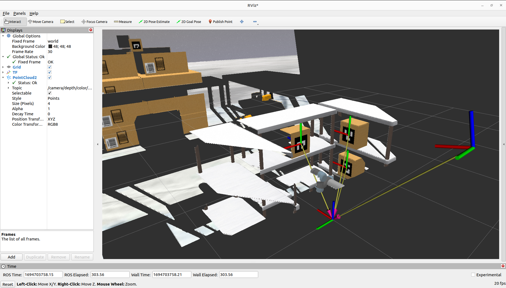
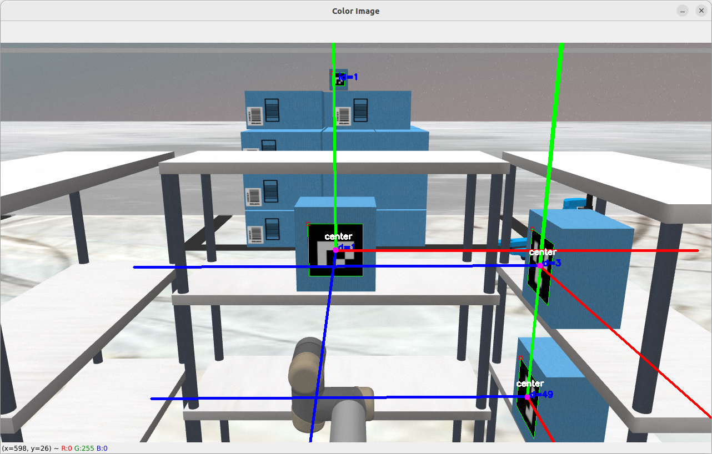
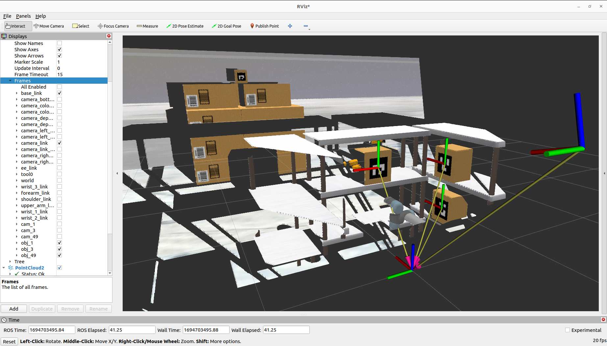

Task 1A - Instructions
Note: Before attempting the task make sure you have gone through the learning resources - computer vision
Task:
- You have to write a single Python script to detect aruco markers present on the package box/object using image data from camera and publish TF (transform).
-
Subscribe to camera topics to get RGB image and Depth image for aruco detection. There are camera plugins defined in robot model which will publish camera image data in ROS Image data format on topics below-
- Raw color image:
/camera/color/image_raw - Depth image:
/camera/aligned_depth_to_color/image_raw
- Raw color image:
-
Detect aruco tags present on each package box inside the warehouse which are in camera/robot arms vicinity. (There are three racks aligned around robot arm with 3 package boxes stacked)
-
Your task is to find center pose (position and orientation) of these 3 package box and send transform between these box/object frame (center position of aruco tag) with respect to (w.r.t.) base_link of robot arm.
-
Also, you need to display aruco tags which are detected along with center points of those marked on the image using OpenCV library and display an image window of it.
- It is compulsory to name the object frame as "obj_<marker_id>" (Ex: obj_49, where 49 is the detected aruco marker ID). Because the auto evaluation script will only look for above mentioned nomenclature.
Note:
- You can watch the expected output images give below to clear your doubts.
- Transform should be send of only those package boxes which are in reach of robot arm, to be considered as a valid submission.
- We have provided a boiler-plate script named task1a.py present inside scripts folder of
ur_descriptionpackage. This script demonstrates steps/instructions to complete the task 1A. Everyone is requested to go through the instructions/steps in the boiler plate code to get more detail on task workflow.
Caution!
- We suggest that you should use OpenCV2, you may choose other library if you are confident to do so but then you won't get support from e-Yantra team for the same.
- There are duplicate boxes with same aruco IDs placed behind in the camera field of view. So, make sure your code handles such scenarios to avoid boxes which are not in reach of robot arm.
Help ;)
- We have provided some functions/methods with some hints to help you get started and complete your task peacefully in the file -
task1a.pywithin theur_descriptionpackage.
Get started with your task
-
Assuming you've updated your repo using
git pullcommand, so install these packages which we will be requiring for current and upcoming tasks by running the following command in the terminal-sudo apt-get install ros-humble-joint-state-broadcaster ros-humble-joint-trajectory-controller ros-humble-controller-manager -
First launch the robot in Gazebo and open RViz using- (Run these commands in two seperate terminals)
ros2 launch ur_description ur5_gazebo_launch.pyros2 launch ur_description spawn_ur5_launch.pyAnd keep it running.
-
Then, run your task 1A python script in a new terminal to send transform using- (Replce package name and filename if you aren't using boiler plate script)
ros2 run ur_description task1a.py -
To visualize TF in RViz-
- Go to RViz and choose
fixed frameasworld - Click on
Add a new displayOR pressCtrl + N - Select
TFinBy display type - Also, add
PointCloud2fromBy display type - Now, you will se all TF published on
worldframe. - Go to
TF -> Frames -> Uncheck 'All Enabled'and only selectobj_<marker_id>(final box frame which you are publishing) - Go to
PointCloid2 -> Topicand select/camera/depth/color/pointstopic to see point cloud data from camera view in RViz
- Go to RViz and choose
Expected Output
You can compare the execution of your python file with TF in RViz. Here is also a screenshot of image windows showing pose and markers drawn on the aruco tag to get you visualise the task goal clearly: (Your implementation may look different, as the main aim is to locate desired packages)
(It might take some time to load the pics ;p)
RViz Window-
Image Window (color window)-
List of TF shown-
Points to note here -
-
The Z axis shown in the image window is drawn away from the box (coming out of the box). But practically we will be requiring TF that is published pointing towards the box (going inside the box). This is because to keep robot arm Z axis in the front direction while picking for ease of picking motion (get more detail in task 1B). Hence, you could observe in RViz window that Z axis is pointing towards the box. So make sure that, you while you send the transform, keep it's Z axis towards the box (inverted) as shown in the image below.
-
You have to draw aruco tag borders on image window and mark a small circular dot defining center position of the tag alongwith aruco tag ID mentioned as seen in the image window below.
-
You can observe an package box placed at the back of front racck with aruco id 1 in the image window. This is to increase difficulty of task. Make sure you avoid drawing axes for such package boxes which are away from robot arm reach position. And also do not send transform w.r.t base_link for the same.
Note: Deadline for the submission of this task is 16th October, 2023